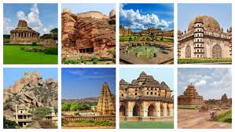
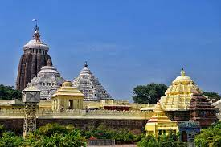
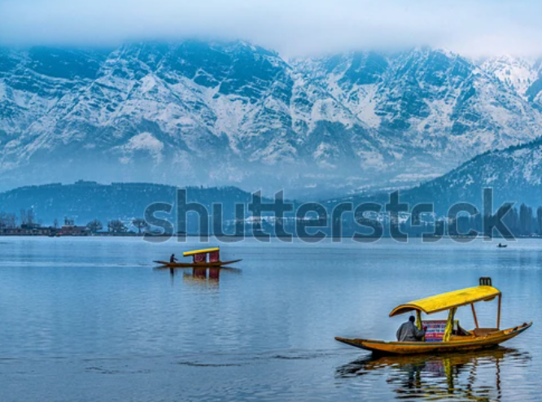
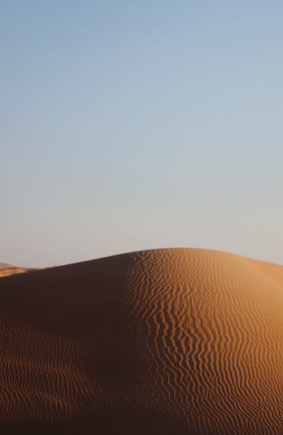

BEST PLACES IN INDIA
Historical Monuments
Temples
Hill Stations
The Great Desert
The Grand Sea-Shore
The Wild Indian Forests
India has many historical monuments, including forts, palaces, and temples. Some of these monuments include
 click for more detailsThe Jagannath Temple in Puri is a famous Hindu temple dedicated to Jagannath (Vishnu) in the coastal town of Puri in the state of Odisha, India. The name Jagannath (Lord of the Universe) is a combination of the Sanskrit words Jagat (Universe) and Nath (Lord of).
 click for more detailsThe Hill Station are a crescent-shaped mountain range in Asia. They stretch from the Indus River in Pakistan, through India, Nepal, and Bhutan, and end at the Brahmaputra River in eastern India. The Himalayas are known for their high peaks, steep-sided jagged peaks, valleys, and alpine glaciers.
 click for more detailsDeserts are one of Earth's main ecosystems and are home to a variety of plants and animals that have adapted to live in harsh desert conditions. Deserts cover one-third of the Earth's land surface.
 click for more detailsA seashore is the land along the edge of the sea. It can also be called the coast, the beach, or the shore.
 click for more details
click for more details